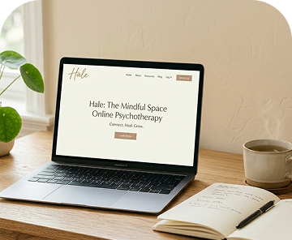
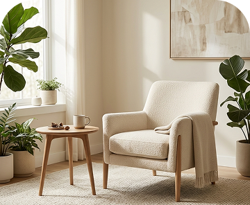

Terapia para mulheres com atendimento presencial em Vitória – ES e online para todo o Brasil e exterior, ajudando no tratamento da ansiedade, depressão, autoestima e relacionamentos. Atendimentos com Andressa Gomes Pereira (CRP 16/7302) pela abordagem da Psicologia Analítica.
AGENDE SUA CONSULTA
Sou Andressa Gomes Pereira (CRP 16/7302), psicóloga clínica formada pelo Centro Universitário FAESA/ES, com especialização em Psicologia Analítica e pós-graduação em Terapia Cognitivo-Comportamental. Ao longo da minha trajetória profissional já acompanhei mais de 200 pacientes, auxiliando mulheres que enfrentam ansiedade, depressão, baixa autoestima, dependência emocional e dificuldades nos relacionamentos.
Também participei do podcast Saúde Cast, abordando o tema saúde mental e emagrecimento saudável, ampliando o diálogo sobre a importância do cuidado emocional no dia a dia.
Meu trabalho terapêutico é voltado para o autoconhecimento e o fortalecimento emocional, ajudando cada paciente a compreender melhor seus sentimentos, pensamentos e padrões de comportamento.
Realizo terapia individual para mulheres adultas e idosas, com atendimento presencial em Vitória – ES, na região da Praia do Canto, além de terapia online para pacientes de todo o Brasil e exterior. Meu objetivo é que cada paciente desenvolva mais consciência sobre si mesma e encontre caminhos mais saudáveis para lidar com suas emoções, relações e desafios da vida.
A terapia é voltada para mulheres adultas e idosas que desejam cuidar da saúde emocional e desenvolver mais autoconhecimento.
AGENDE SUA CONSULTAA terapia pode ajudar mulheres que enfrentam:
No processo terapêutico, o primeiro passo é compreender a sua história e como suas experiências influenciam sua vida emocional.
A partir dessa escuta, trabalhamos sentimentos, pensamentos e padrões de comportamento, promovendo autoconhecimento e novas formas de lidar com os desafios do dia a dia.
Com o tempo, você desenvolve mais consciência emocional, equilíbrio e segurança, fortalecendo sua relação consigo mesma e vivendo de forma mais leve e autêntica.
AGENDE SUA CONSULTAA Psicologia Analítica, desenvolvida por Carl Jung, busca compreender os aspectos conscientes e inconscientes da mente humana. No processo terapêutico, o objetivo é promover autoconhecimento profundo, ajudando a pessoa a compreender padrões emocionais, conflitos internos e desenvolver uma relação mais saudável consigo mesma.
AGENDE SUA CONSULTAAtendimento pensado para você

Sessões realizadas por videochamada, com a mesma qualidade do atendimento presencial, para pacientes em todo o Brasil e exterior.
AGENDE SUA CONSULTA
Sessões realizadas em Vitória – ES, em um ambiente acolhedor e preparado para o cuidado com a sua saúde emocional.
AGENDE SUA CONSULTAO acompanhamento terapêutico é conduzido com acolhimento, escuta atenta e direcionamento. O objetivo não é apenas falar sobre os problemas, mas compreender a origem do sofrimento emocional e desenvolver caminhos que gerem mudanças reais no dia a dia.
Durante o processo, buscamos identificar padrões de pensamento, emoções e comportamentos, trabalhando no desenvolvimento de novas formas de lidar com as situações da vida com mais consciência, segurança e equilíbrio emocional.
Ao longo dos primeiros meses de acompanhamento, muitas pacientes já começam a perceber mudanças importantes na forma de pensar, sentir e se posicionar diante da vida.
AGENDE SUA CONSULTARelatos de mulheres que vivenciaram o processo terapêutico e compartilharam suas experiências.
AGENDE SUA CONSULTAA ansiedade faz parte da vida, mas quando se torna constante e começa a afetar o bem-estar e a rotina, pode ser um sinal de que é hora de buscar ajuda. O acompanhamento psicológico auxilia na compreensão das...
A dependência emocional pode fazer com que a pessoa coloque as necessidades do outro sempre em primeiro lugar, deixando de lado seus próprios limites e sentimentos. A terapia ajuda a...
A autoestima influencia diretamente na forma como nos vemos, nas escolhas que fazemos e nos relacionamentos que construímos. Fortalecer a autoestima é um processo que envolve...
O autoconhecimento é um passo importante para compreender emoções, comportamentos e padrões que fazem parte da nossa história. Através desse processo, é possível desenvolver mais consciência...
Avenida Nossa Senhora da Penha, 699 - Praia do Canto,
Vitória - ES
Se você deseja iniciar seu processo terapêutico ou tirar dúvidas sobre o atendimento, entre em contato. Será um prazer te acompanhar nessa jornada de cuidado com a sua saúde emocional.
Entre em contato para saber mais sobre o acompanhamento psicológico
AGENDE SUA CONSULTA